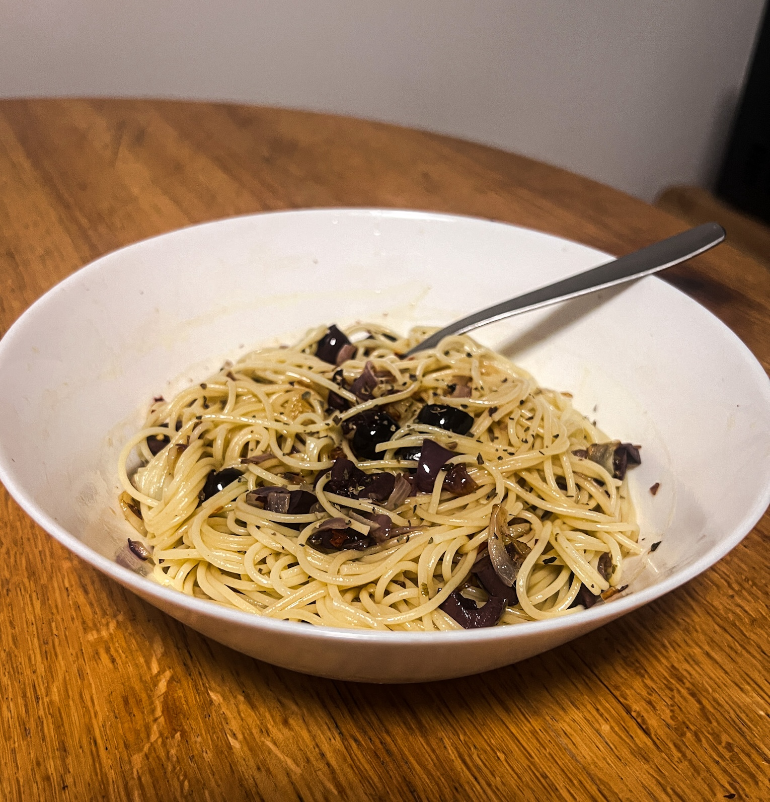

A Recipe For Some Awesome Spaghetti...Without Sauce!

Instructions
In one pot, cook the spaghetti in boiled water, sprinkling in some salt.
Once the spaghetti seems half cooked, get a skillet and heat up 1 tablespoon of olive oil.
Once there is some heat, slide your sliced onions and garlic into the skillet. Use a mixing spatula to sauté the onions and garlic. Keep them on the pan until they are a golden-brown color.
If the spaghetti is not yet done, turn down the heat on your onion-garlic skillet, and once it is done, turn off both stoves.
Put the spaghetti in an empty bowl. Slide the olive oil-onion-garlic mixture from the skillet into the bowl with the spaghetti.
Put the cut olives into the bowl as well, and season with basil, oregano, and crushed red pepper. Add salt to taste. Mix everything together in the bowl with a spoon or fork.